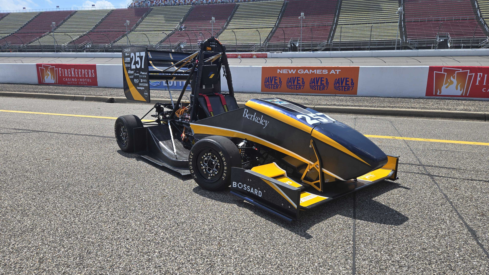

Formula Electric at Berkeley, FSAE EV



- Leading a subsystem of 13 members in the cross-functional research and development of a complete FSAE aerodynamics package design (bodywork, rear wing, front wing, undertray) and livery, utilizing ANSYS Fluent CFD and ANSYS Mechanical FEA to guide structures CAD design and optimize surface ClA/CdA for race performance.
- Designed the team's first undertray mold using SOLIDWORKS and Fusion360 to create a three-part infusion mold, boosting total generated downforce by 58.8%.
- Implemented vacuum-assisted resin infusion layups for undertray, front wing, bodywork, and rear wing, reducing aero package mass by 38.6%.
- Conducted composites R&D to optimize mass-to-strength ratios in carbon fiber-honeycomb-foam structures.
- Developed DFM jigs to constrain rib and wing skin assemblies during bonding, improving structural alignment.
SN5 Aerodynamics Binder
Open the SN5 Aerodynamics Binder (PDF) in a new tab
Design Review Board